На следующем рисунке показана лицевая и задняя стороны типичной платы Blue Pill STM32. Как видите, макет платы очень прост, и некоторые могут даже спутать ее с Arduino Nano.
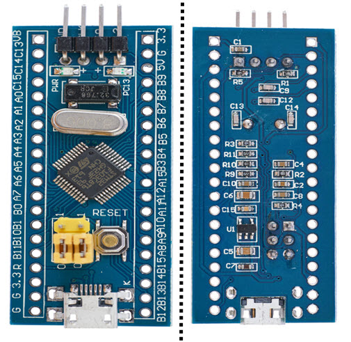
Важной особенностью этих плат является то, что они очень дешевы, дешевле, чем клонированная версия Arduino UNO. Я получил эту плату примерно за 2,5 доллара в местном магазине электроники. Таким образом, это, очевидно, клонированная версия (возможно, поддельный микроконтроллер STM32). На рынке доступно много клонированных версий этой платы.
На каждой длинной стороне платы есть контакты для подключения различных аналоговых и цифровых устройств ввода-вывода и питания. На следующем рисунке показана конфигурация контактов платы, а также различные функции, поддерживаемые каждым контактом.
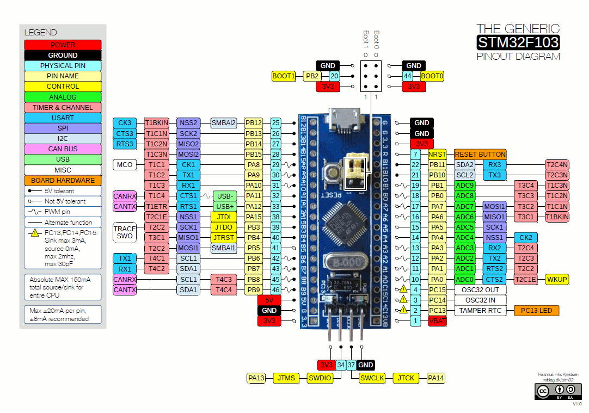
Как видно из приведенного выше изображения, каждый вывод микроконтроллера STM32F103C8T6 может иметь несколько функций (но необходимо выбрать только одну). Также обратите внимание, что некоторые контактыввода / вывода допускают 5 В, что означает, что вы можете подключить 5 В совместимый ввод / вывод на эти контакты без каких-либо проблем.
Если вы планируете купить более дешевую версию (вероятно, большинство из нас так и поступают), то есть некоторые известные проблемы с платами, о которых вы должны знать. Я собрал эти вопросы на разных форумах и сам столкнулся с некоторыми проблемами (связанными с USB).
Теперь, когда мы немного узнали о плате Blue Pill, давайте теперь разберемся с некоторыми важными особенностями самой платы, то есть микроконтроллера STM32F103C8T6. Как упоминалось ранее, этот микроконтроллер содержит 32-битное ядро ARM Cortex-M3 с максимальной частотой 72 МГц.
Давайте теперь посмотрим, какие технические характеристики этого микроконтроллера реализованы на плате Blue pill.
Это некоторые из основных моментов, и если вы хотите узнать больше информации о периферийных устройствах, вам следует обратиться к datasheet (настоятельно рекомендуется).
В качестве дополнительной темы позвольте мне рассказать вам о маркировке, используемое в микроконтроллерах STM32 на примере STM32F103C8T6. Каждая буква в названии микроконтроллера обозначает особую характеристику:
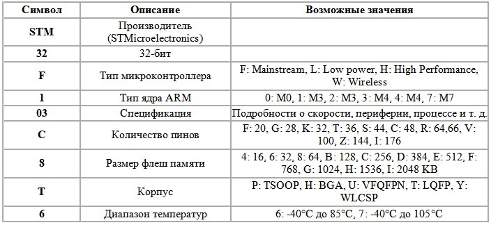
Как упоминалось ранее, контакты BOOT0 и BOOT1 микроконтроллера используются для выбора памяти, с которой он загружается. На следующем рисунке показаны три различных варианта загрузочных пространств на основе этих контактов:
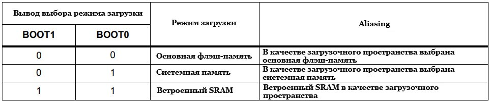
Когда контакты BOOT0 и BOOT1 имеют НИЗКИЙ уровень, тогда внутренняя флэш-память выступает в качестве основного загрузочного пространства, а когда BOOT0 — ВЫСОКИЙ, а BOOT1 — низкий, системная память выступает в качестве основного загрузочного пространства. Эти два варианта важны для нас.
Чтобы загрузить код во флэш-память микроконтроллера, вы должны выбрать системную память в качестве основного загрузочного пространства. Причина этого заключается в том, что системная память содержит встроенный загрузчик, который программируется во время производства.
Загрузив в системную память, т. е. в bootloader ROM, вы можете перепрограммировать флэш-память в своем приложении, используя последовательный интерфейс USART1.
Как только программа будет загружена во флэш-память, вы можете переключить BOOT0 на LOW, чтобы после следующего сброса или включения питания микроконтроллера программа загрузилась из флэш-памяти.
Если вы заметили, в обоих случаях, т.е. при выборе флэш-памяти и выборе системной памяти в качестве загрузочных пространств, вывод BOOT1 имеет НИЗКИЙ. Только BOOT0 переключается между LOW (флэш-память) и HIGH (системная память).
Для удобства, давайте назовем эти варианты загрузки как режим программирования и рабочий режим. Для режима программирования вывод BOOT0 устанавливается ВЫСОКИМ, а для режима работы вывод BOOT0 — НИЗКИМ (по умолчанию). В обоих режимах контакт BOOT1 остается НИЗКИМ.
Поскольку это наша вводная часть, и все, что мы будем делать, это мигать светодиодом (который уже присутствует на плате), нам не нужно много оборудования в отношении проекта и микроконтроллера.
Но для программирования микроконтроллера нам нужен модуль USB-последовательный преобразователь, такой как плата FTDI (или что-то подобное). Как упомянуто в разделе BOOT Pins, к загрузчику можно получить доступ с помощью контактов USART1 микроконтроллера для программирования флэш-памяти. И чтобы микроконтроллер мог обмениваться данными с USART1, нам необходим USB-последовательный преобразователь.
ПРИМЕЧАНИЕ. У меня нет программатора в стиле FTDI, но есть конвертер USB в последовательный интерфейс более старого типа. Вы можете использовать любые модули USB to Serial Converter, если они имеют контакты VCC (5 В), GND, RX и TX.
Для упрощения представления я использую FTDI, такой как USB to Serial Converter.
Соединения должны быть следующими:
STM32 Blue Pill — программатор FTDI
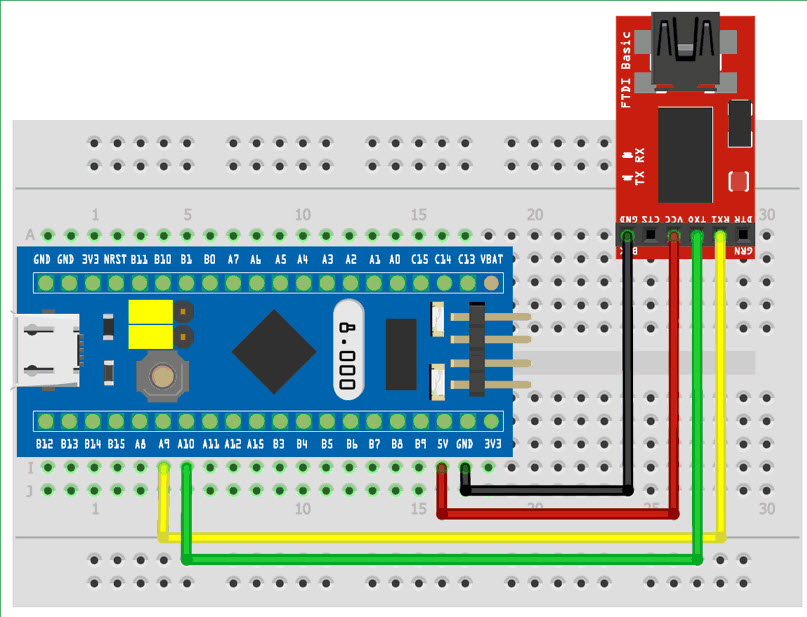
Я уверен, что у вас уже установлена Arduino IDE на вашем ПК (или ноутбуке). Если нет, то сначала установите его. После этого откройте вашу среду разработки Arduino и выберите «Файл» -> «Настройки». Вы найдете вкладку «URL-адреса менеджера дополнительных плат». Скопируйте следующую ссылку и вставьте ее туда.
https://github.com/stm32duino/BoardManagerFiles/raw/master/STM32/package_stm_index.json
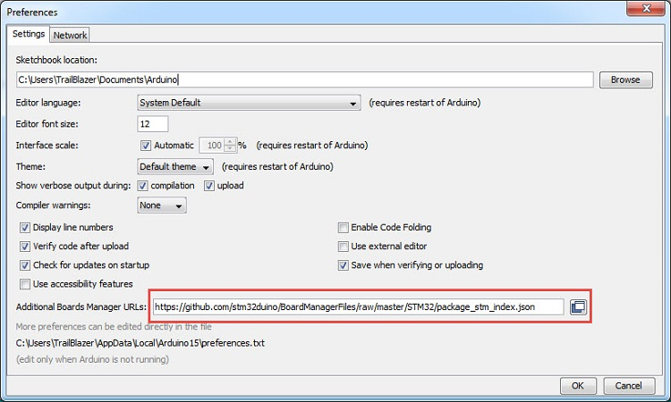
Если у вас уже есть несколько URL-адресов в этом разделе, вы можете добавить больше, разделив их запятой. Если вы работали с платами ESP8266, то вы, возможно, уже знакомы с этим процессом. После добавления URL нажмите ОК.
Теперь перейдите в меню Инструменты -> Плата -> Менеджер плат … и найдите «stm32». Вы получите такой результат, как «STM32 Cores by STMicroelectronics». Установите последнюю версию. На момент подготовки этого руководства последняя версия была 1.8.0.
Это займет некоторое время, так как загрузит и установит некоторые необходимые файлы и инструменты. (Я сказал кое-что, потому что вам нужно скачать другой инструмент от STMicroelectronics, чтобы это работало).
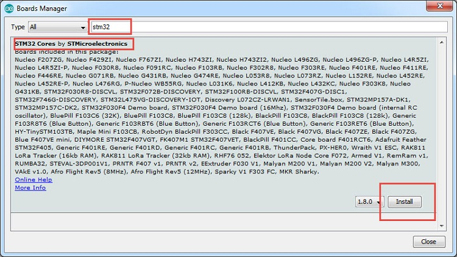
Теперь вы можете выбрать плату из Инструменты -> Плата -> Generic STM32F1 series. После того, как вы выберете эту плату, ниже появится куча опций для настройки типа вашей платы. Первый важный параметр — «Номер платы». Убедитесь, что выбран «BluePill F103C8».
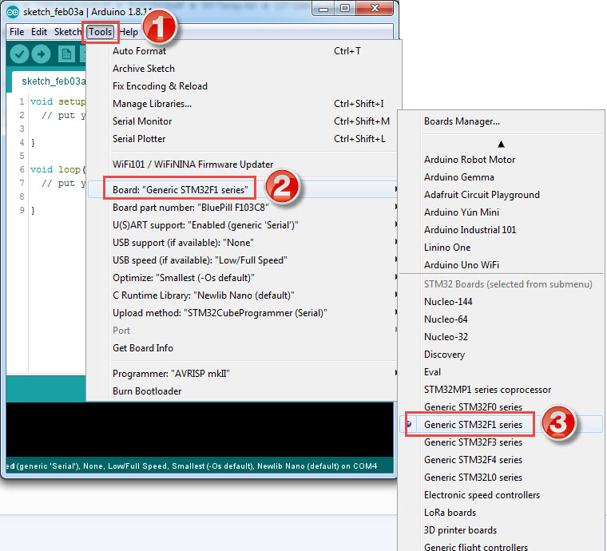
Другими важными опциями являются «Поддержка U (S) ART», установите как «Включено (generic «Serial»)» и «Метод загрузки», сделайте его как «STM32CubeProgrammer (Serial)». Вы можете оставить остальные опции в качестве значений по умолчанию.
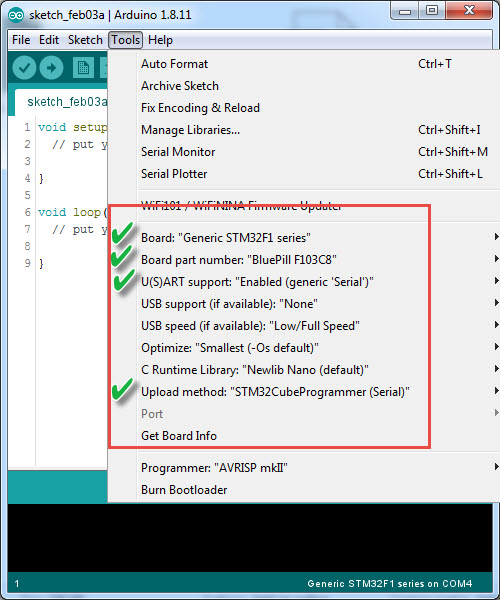
На предыдущем шаге мы выбрали «STM32CubeProgrammer (Serial)» в качестве метода загрузки, но проблема в том, что этот инструмент не загружается и не устанавливается менеджером плат.
Итак, мы должны установить его вручную. Для этого перейдите на официальную страницу загрузки STM32CubeProgrammer, предоставленную STMicroelectronics, по следующей ссылке.
Нажмите на опцию Get Software, и вы попадете на страницу входа / регистрации. Я предлагаю вам зарегистрироваться в STMicroelectronics с действительным адресом электронной почты. После регистрации вы можете войти и загрузить программное обеспечение.
Будет загружен большой zip-файл (приблизительно 164 МБ для версии 2.3.0). Распакуйте zip-файл, и вы получите исполняемый файл Windows с именем «SetupSTM32CubeProgrammer-2.3.0». Дважды щелкните и продолжите установку.
Убедитесь, что каталог установки установлен по умолчанию, и ничего не меняйте. Может потребоваться разрешение на установку некоторых драйверов для ST-Link. Вы можете предоставить необходимые разрешения.
После завершения установки убедитесь, что в пути “C:\Program Files \ STMicroelectronics \ STM32Cube \ STM32CubeProgrammer \ bin” имеется исполняемый файл «STM32_Programmer_CLI». Если он присутствует, то вы можете продолжать.
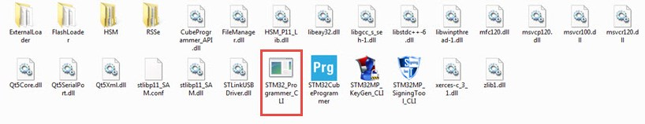
ПРИМЕЧАНИЕ. Это может быть либо Program Files, либо Program Files (x86) по указанному выше пути.
На этом завершается настройка программного обеспечения для Arduino IDE для программирования STM32 Blue Pill. Давайте приступим к написанию небольшой программы для мигания светодиода и загрузки ее в нашу плату STM32 Blue Pill.
Убедитесь, что вы внесли необходимые изменения в IDE Arduino, как указано в предыдущем разделе (выбор правильной платы и т. д.). Как только это будет сделано, установите соединение между программатором FTDI (т. е. с USB Serial Converter) и платой STM32, как указано выше.
Теперь, прежде чем подключать FTDI к ПК, убедитесь, что плата гBlue Pill STM32 находится в «режиме программирования», т.е. переключите контакт BOOT0 в HIGH. После этого подключите FTDI к ПК или ноутбуку. COM-порт будет назначен программатору и выберет тот же COM-порт в Arduino IDE.
Напишите программу Blink следующим образом. Это похоже на скетч Arduino Blink, но вместо этого LED_BUILTIN я использовал PC13, так как светодиод подключен к этому выводу микроконтроллера.
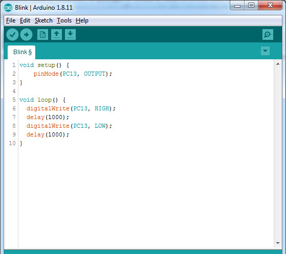
После этого вы можете нажать «Загрузить», и среда IDE начнет компилировать код. Это займет некоторое время для компиляции.
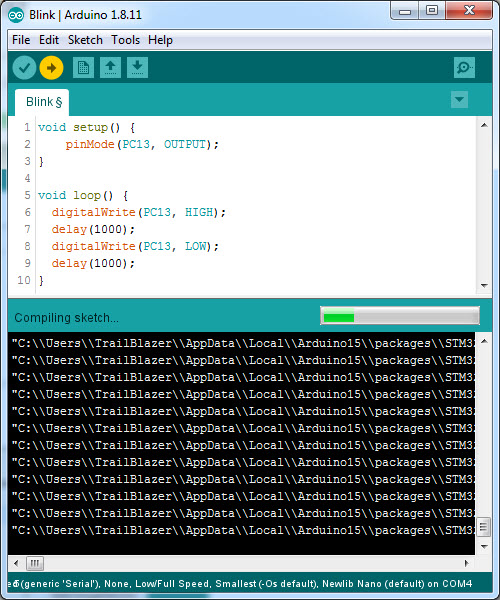
Как только компиляция будет завершена, она автоматически вызовет инструмент STM32CubeProgrammer. Если все пойдет хорошо, IDE успешно запрограммирует плату STM32.
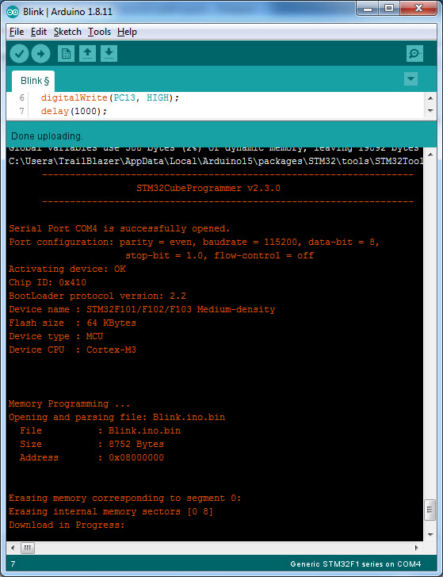
Он автоматически сбросит настройки микроконтроллера, и вы увидите, что светодиод мигает. Не забудьте переставить контакты BOOT0 обратно в положение LOW, чтобы при следующем включении питания на платформе запускалась ранее загруженная программа.